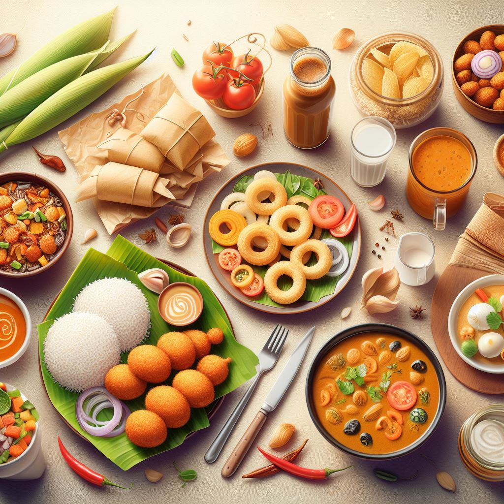
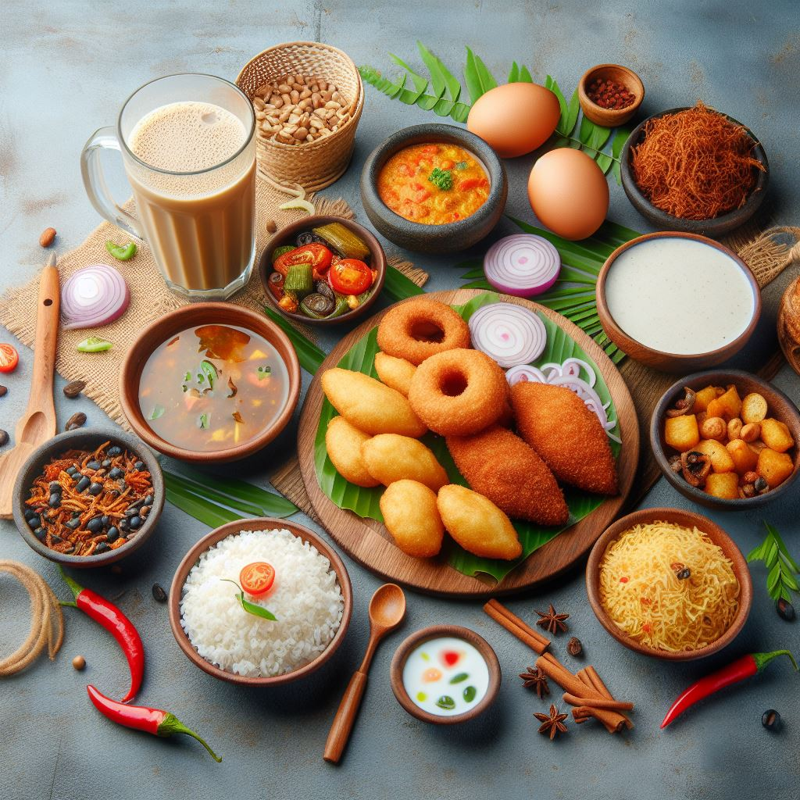
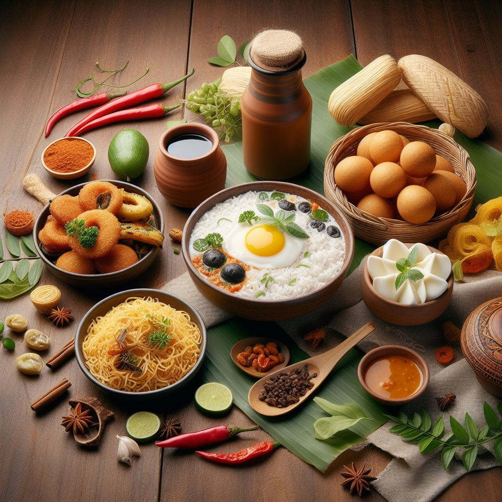
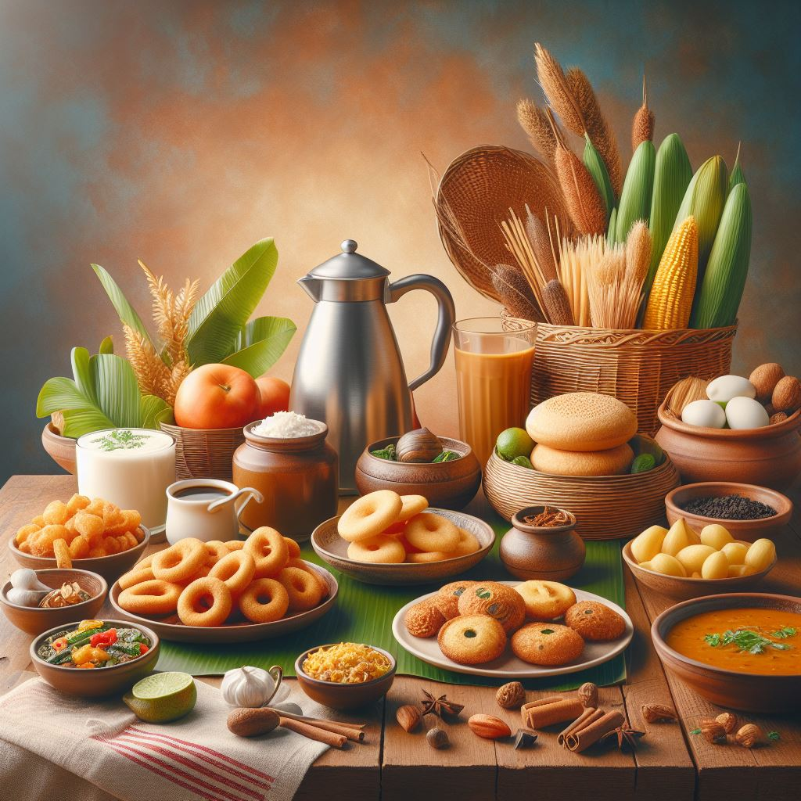
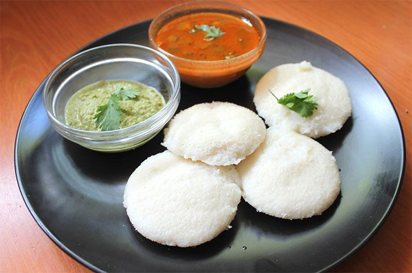

Homely Delights
A Homely Produced Food Delivery System
   
| Indulge in the comfort of a homely-made meal, where every dish is crafted with love and warmth. Our menu reflects the simplicity and authenticity of home-cooked goodness, offering a delightful experience reminiscent of the familiar flavors of a loving kitchen. Savor the homely touch in every bite, creating a dining experience that feels like a warm embrace. |  | Indulge in the irresistible allure of Kerala's finest idlis, a beloved South Indian delicacy perfect for breakfast or anytime cravings strike. Crafted from a meticulously fermented blend of rice and lentils, these soft, fluffy cakes promise a culinary journey of unmatched flavor and nourishment. Paired with creamy coconut chutney and aromatic sambar, each bite is a tantalizing symphony for the senses. Elevate your dining experience with our authentic Kerala idlis – a wholesome and delightful choice that's sure to satisfy every palate. | |
| Indulge in the comfort of a homely-made meal, where every dish is crafted with love and warmth. Our menu reflects the simplicity and authenticity of home-cooked goodness, offering a delightful experience reminiscent of the familiar flavors of a loving kitchen. Savor the homely touch in every bite, creating a dining experience that feels like a warm embrace. | Indulge in the comfort of a homely-made meal, where every dish is crafted with love and warmth. Our menu reflects the simplicity and authenticity of home-cooked goodness, offering a delightful experience reminiscent of the familiar flavors of a loving kitchen. Savor the homely touch in every bite, creating a dining experience that feels like a warm embrace. |